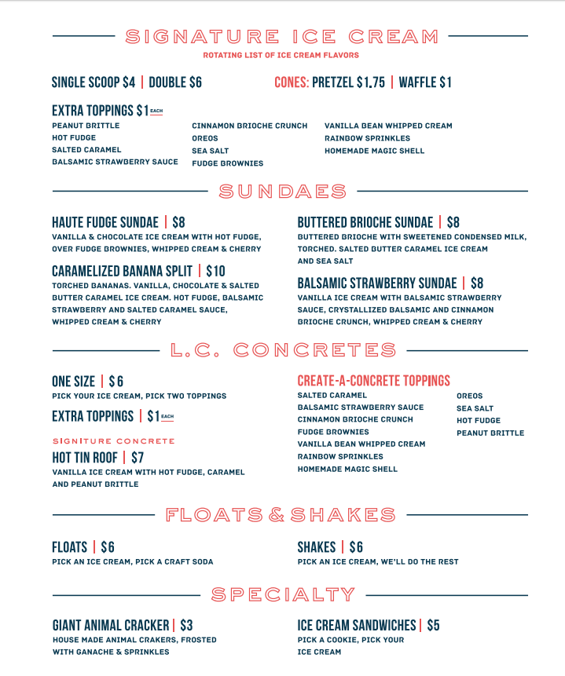

Get these flavors at your local Whole Foods, Rainbow Blossom stores, Old Town Wine and Spirits in the Highlands, The Omni Hotel, and the Marriott Downtown!
Flavors in the scoop shop are in constant seasonal rotation, Butbut we always keep Royal Chocolate, Vanilla Two Ways, Bourbon Smoked Pecan, and Saltedter Pecan in the shop. Be sure and follow us on social media to see what our new flavor are (find us under @louisvillecream).
We’ve got hot apple cider to warm you up, because we know you are chilly. Seasoned with orange slices and cinnamon sticks - so fragrant and delicious! Get it with house-made whipped cream on top!
